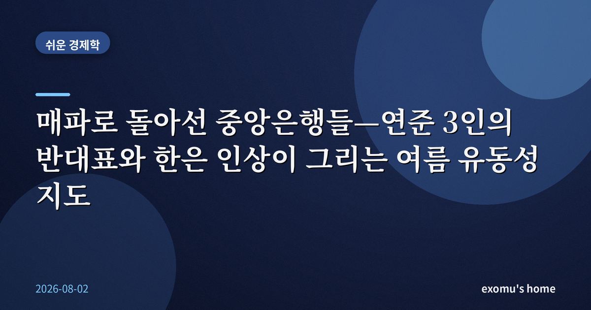
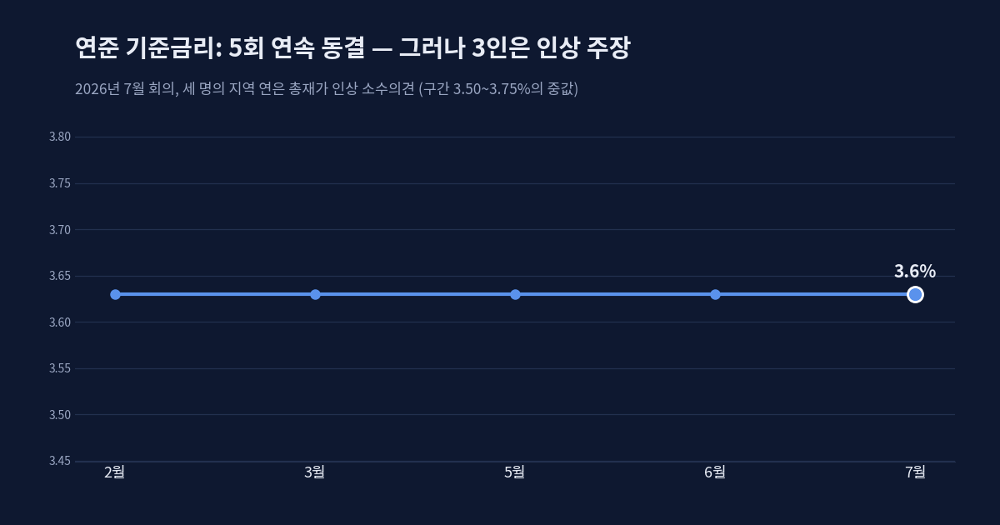
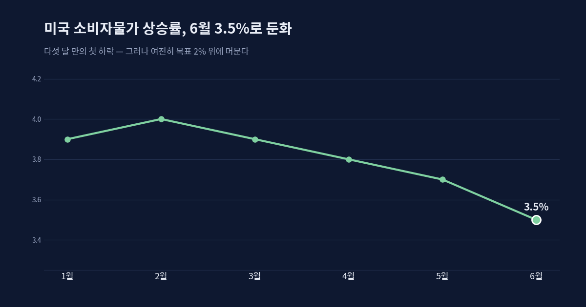
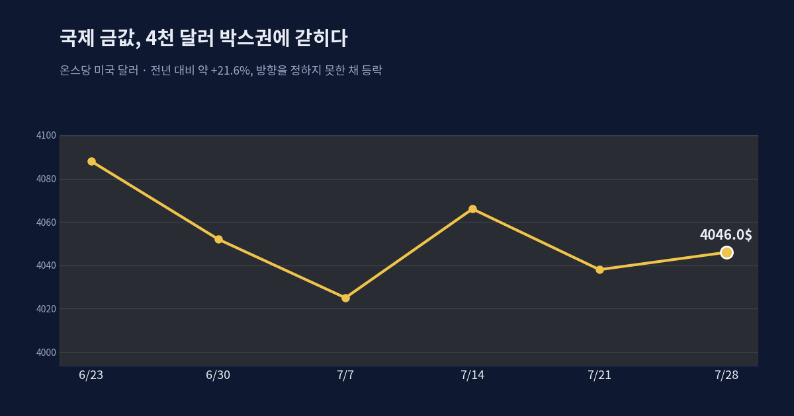
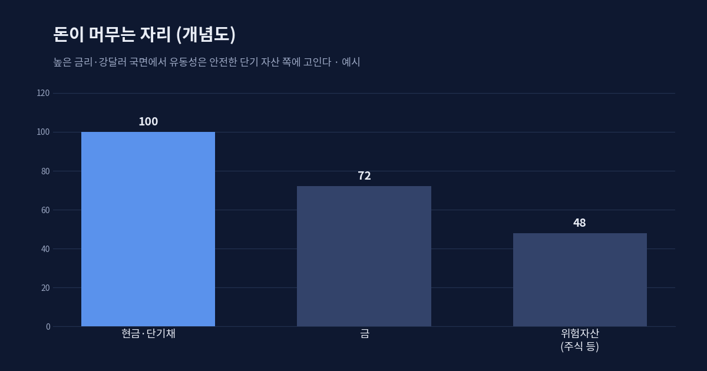

매파로 돌아선 중앙은행들 — 연준 3인의 반대표와 한은 인상이 그리는 여름 유동성 지도

완화의 시대가 잠시 멈췄다
2026년 여름, 시장이 몇 년 동안 당연하게 여기던 이야기가 흔들리고 있다. '중앙은행은 결국 금리를 내린다'는 전제다. 팬데믹 이후의 긴 긴축이 끝나면 돈이 다시 풀릴 것이라는 기대가 자산 가격의 바닥을 받쳐 왔다. 그런데 지난 7월, 미국 연방준비제도는 다섯 번째 회의에서도 기준금리를 3.50~3.75% 구간에 그대로 묶었다. 인하가 아니라 동결이었고, 회의장의 공기는 인하보다 인상 쪽으로 기울어 있었다.
같은 달 한국은행은 한 걸음 더 나아가 기준금리를 0.25%포인트 올렸다. 2023년 1월 이후 3년 반 만의 인상이다. 두 나라의 중앙은행이 약속이나 한 듯 '완화'의 반대편으로 몸을 틀었다. 이 장면을 어떻게 읽어야 할지, 오늘은 개별 종목이 아니라 돈의 큰 물줄기를 따라가 본다.

연준 안에서 갈라진 목소리
7월 연준 회의의 진짜 뉴스는 동결 그 자체가 아니라 반대표였다. 세 명의 지역 연은 총재가 금리를 올려야 한다며 다수 의견에 반기를 들었다. 한 방향으로 뜻을 모은 세 명의 반대는 2016년 이후 처음 있는 일이다. 표면의 결정은 '유지'였지만, 내부의 무게중심은 분명히 매파 쪽으로 이동하고 있다는 신호였다.
배경에는 좀처럼 목표치로 내려오지 않는 물가가 있다. 6월 미국 소비자물가 상승률은 3.5%로 다섯 달 만에 처음 꺾였지만, 여전히 연준이 목표로 하는 2%보다 한참 위다. 물가가 끈질기게 버티는 한, 연준은 섣불리 돈을 풀 수 없다. 시장이 바라는 인하는 자꾸 뒤로 밀리고, '어쩌면 한 번 더 올릴 수도 있다'는 경고가 회의록의 행간에서 읽힌다.

한국은행은 왜 반대 방향으로 움직였나
한국은행의 인상은 얼핏 의외로 보인다. 경기 둔화 우려가 있는데도 금리를 올렸기 때문이다. 그러나 예상을 웃도는 성장세와, 미국과의 금리 격차가 벌어질 때 나타나는 자본 유출·환율 부담을 함께 놓고 보면 그림이 달라진다. 미국이 높은 금리를 오래 유지하는 동안 한국만 금리를 낮추면, 돈은 더 높은 이자를 좇아 밖으로 흐르고 원화는 약해진다.
즉 한은의 인상은 국내 경기만 본 결정이 아니라, 바깥으로 새어 나가려는 돈을 붙잡고 환율을 방어하려는 선택에 가깝다. 8월 말에 예정된 다음 결정에서도 추가 인상 가능성이 거론되는 이유다. 가계부채라는 무거운 짐 때문에 인상의 폭과 속도는 제한되겠지만, 방향만큼은 완화가 아니라는 점이 분명해졌다.
금은 왜 오르지도 내리지도 못하나
이 어정쩡한 국면을 가장 솔직하게 보여 주는 자산이 금이다. 금값은 온스당 4천 달러 언저리에서 위로도 아래로도 크게 벗어나지 못한 채 좁은 박스권에 갇혀 있다. 지난 1년 사이 20%가 넘게 오른 상승분은 지키고 있지만, 새로운 방향을 잡지는 못한다.
이유는 두 힘이 팽팽히 맞서기 때문이다. 각국 중앙은행의 꾸준한 금 매입과 지정학적 불안은 금을 아래에서 떠받친다. 반대로 높은 금리와 강한 달러는 이자를 낳지 않는 금의 매력을 깎아내려 위를 누른다. 완화가 시작되어 달러가 약해지기 전까지 금은 이 줄다리기 안에 머무를 공산이 크다. 금의 정체(停滯)는 곧 시장 전체가 '방향을 기다리는 중'이라는 뜻이기도 하다.

돈은 지금 어디로 흐르는가
정리하면 이렇다. 물가는 끈적하고, 연준은 인하를 미루며 오히려 인상을 저울질하고, 달러는 강하다. 이런 환경에서 유동성은 위험자산으로 시원하게 흘러가지 못하고, 높은 금리를 그대로 받아 주는 단기 채권과 현금성 자산 언저리에 고인다. 강한 달러는 신흥국 통화와 원자재의 발목을 잡고, 빚으로 굴러가던 자산일수록 이자 부담에 예민해진다.

그렇다고 이 국면이 나쁘기만 한 것은 아니다. 방향이 정해지지 않은 시기는 위험이 큰 만큼, 각 자산의 체력을 차분히 확인할 시간을 벌어 준다. 중요한 것은 '언제 내릴까'를 맞히는 게임이 아니라, 금리가 높은 채로 오래 머물러도 견딜 수 있는 구조인지를 스스로 점검하는 일이다.
투자자가 아니라 관찰자의 자리에서
매파로 돌아선 중앙은행들은 우리에게 하나의 질문을 던진다. 값이 오르는 이유가 실적인지, 단지 풀린 돈 때문인지 구분해 왔는가. 돈의 밀물이 잠시 멈춘 지금이야말로, 물이 빠졌을 때 누가 옷을 입고 있는지 드러나는 시기다. 조급하게 방향을 단정하기보다, 흐름의 지도를 넓게 펼쳐 놓고 내 자리를 확인하는 편이 낫다.